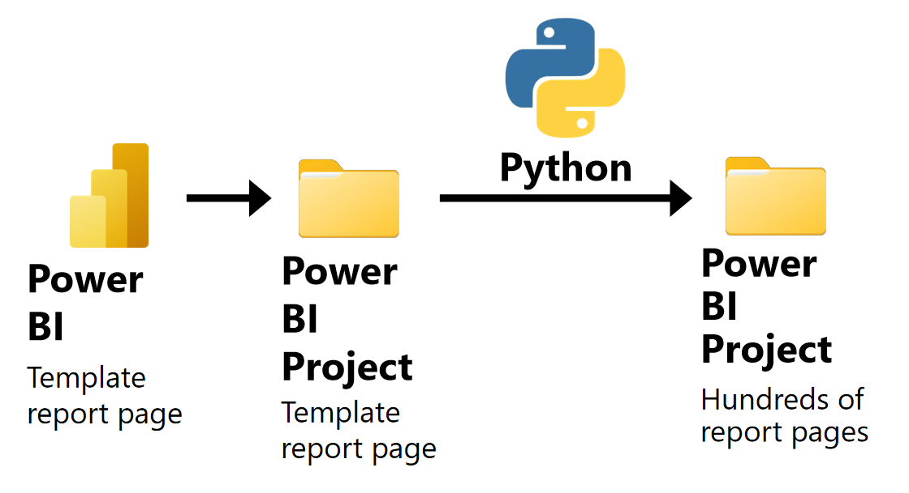
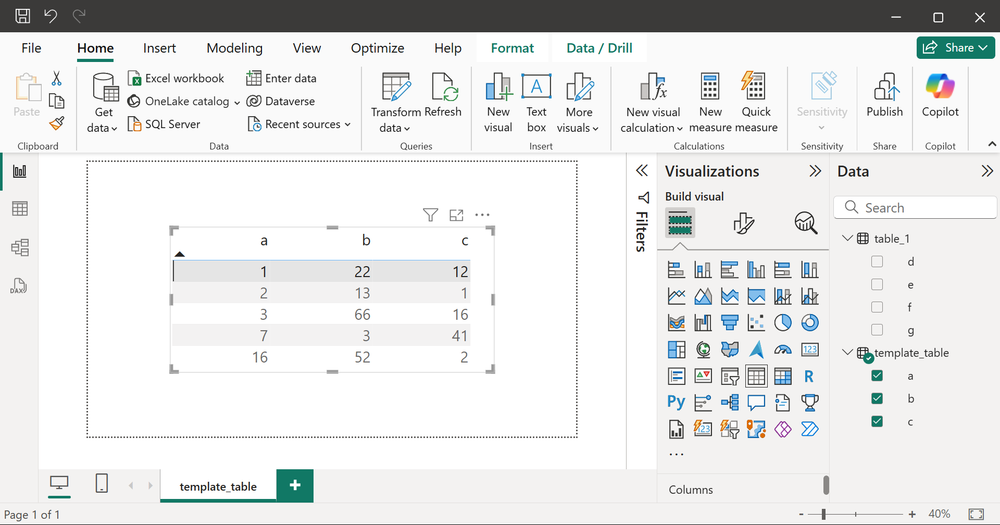
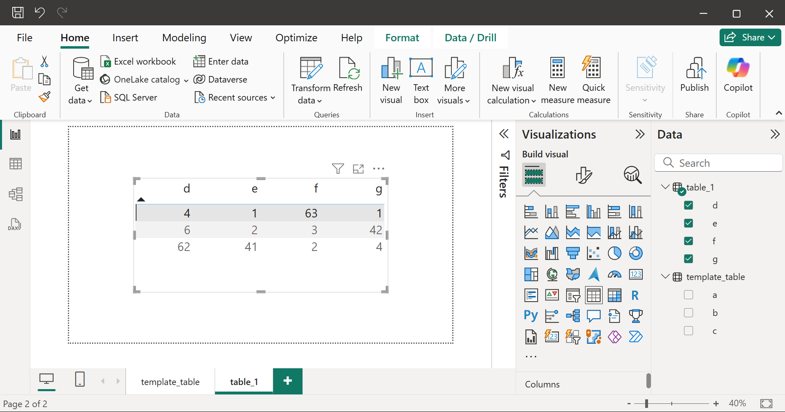

Automating Tilray's data entry using Python
Summary

Problem: My manager asked me to create hundreds of copies of a Power BI template report page, manually filling in each page with a different data table using the Power BI graphical user interface (GUI).
Solution: After manually filling in a few pages, I wondered if there was a faster way to complete the task. Hence, I read the Power BI developer documentation and discovered the recently released "Power BI Project" feature, which my manager was unaware of. The feature enabled me to write a Python script to automate the task.
Results: The Python script saved days of work for my team.
Power BI Projects (PBIP)
A Power BI Project (PBIP) defines a Power BI report using a folder of plain text files (PBIP documentation). By using PBIPs, we can edit Power BI reports using a programming language, such as Python.
.SemanticModel folder
Defines the data tables that are used to create the data visualizations in the report pages.
- Each
.tmdlfile in thetablesfolder defines a semantic model table. For example, the file contains the Power Query M code that produces the table.
.pbip file
A Power BI report such that changes made to the .Report and .SemanticModel folders will change the .pbip file. Furthermore, changes made to the .pbip file using the Power BI GUI will change the .Report and .SemanticModel folders.
I used the Power BI GUI to create a template_table report page, which presents the data from the template_table semantic model table. The template_table report page defines the appearance of the report pages that the Python script will create.

project.pbip
.Report folder
Defines all the report pages in the Power BI report.
📂definition
┣ 📂pages # (1)!
┃ ┣ 📂template_table
┃ ┃ ┣ 📂visuals
┃ ┃ ┃ ┗ 📂table_visual
┃ ┃ ┃ ┃ ┗ 📜visual.json # (2)!
┃ ┃ ┗ 📜page.json
- Each folder in the
pagesfolder defines a report page. - Each
visual.jsonfile defines a data visualization. For example, the file specifies the type of data visualization, and which semantic model tables to use to create the visualization.
Python code
I used the following Python packages:
-
pathlibto represent filesystem paths. -
shutilto copy files and folders. -
reto parse.tmdlfiles using regular expressions. -
jsonto edit.jsonfiles. -
typingto add type hints.
1. Create variables.
project_path = Path(r"") # paste the path to the Power BI project folder
pages_path = project_path / ".Report" / "definition" / "pages"
tables_path = project_path / ".SemanticModel" / "definition" / "tables"
new_table_name = "table_1"
new_page_name = new_table_name
2. Extract the column names of each semantic model table from the .tmdl files.
def get_column_names() -> Dict[str, List[str]]:
table_name_to_column_names = dict()
for table_tmdl_path in tables_path.glob('*.tmdl'):
table_name = (re
.search(r'.*\\(.*)\.tmdl$', str(table_tmdl_path))
.group(1)
)
with open(table_tmdl_path, 'r') as f:
table_tmdl_data = f.read()
column_names = re.findall(r'\n\tcolumn (.*)\n', table_tmdl_data)
table_name_to_column_names[table_name] = column_names
return table_name_to_column_names
table_name_to_column_names = get_column_names()
column d
dataType: int64
formatString: 0
lineageTag: d8b5b183-7b7a-47a0-8219-211965773f6d
summarizeBy: none
sourceColumn: d
annotation SummarizationSetBy = User
column e
dataType: int64
formatString: 0
lineageTag: c55162d8-0445-42ef-9b16-236054053d6d
summarizeBy: none
sourceColumn: e
annotation SummarizationSetBy = User
3. Create a copy of the template_table folder named table_1.
def copy_template_page(new_page_name: str) -> None:
template_page_path = pages_path / "template_table"
new_page_path = pages_path / new_page_name
shutil.copytree(template_page_path, new_page_path)
copy_template_page(new_page_name)
4. Edit page.json to change the name of the new report page from template_table to table_1.
def edit_page_json(page_name: str) -> None:
page_json_path = pages_path / page_name / "page.json"
with open(page_json_path, 'r') as f:
page_json_data = json.load(f)
page_json_data['name'] = page_name
page_json_data['displayName'] = page_name
with open(page_json_path, 'w') as f:
json.dump(page_json_data, f, indent=4)
edit_page_json(new_page_name)
5. Edit visual.json to present the columns from table_1 instead of the columns from template_table.
visual_json_column_template = ({
"field": {
"Column": {
"Expression": {
"SourceRef": {
"Entity": "table_name"
}
},
"Property": "column_name"
}
},
"queryRef": "table_name.column_name",
"nativeQueryRef": "column_name"
})
def create_visual_json_columns(table_name: str) -> str:
visual_json_columns = []
for column_name in table_name_to_column_names[table_name]:
visual_json_column = copy.deepcopy(visual_json_column_template)
(visual_json_column['field']['Column']['Expression']
['SourceRef']['Entity']) = table_name
visual_json_column['field']['Column']['Property'] = column_name
visual_json_column['queryRef'] = f'{table_name}.{column_name}'
visual_json_column['nativeQueryRef'] = column_name
visual_json_columns.append(visual_json_column)
return visual_json_columns
def edit_visual_json(page_name: str, table_name: str) -> None:
visual_json_path = (pages_path / page_name /
"visuals" / "table_visual" / "visual.json")
with open(visual_json_path, 'r') as f:
visual_json_data = json.load(f)
(visual_json_data['visual']['query']['queryState']['Values']
['projections']) = create_visual_json_columns(table_name)
with open(visual_json_path, 'w') as f:
json.dump(visual_json_data, f, indent=4)
edit_visual_json(new_page_name, new_table_name))
New report pages
project.pbip

project.pbip